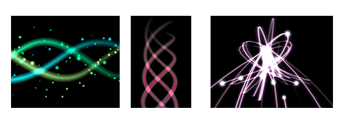
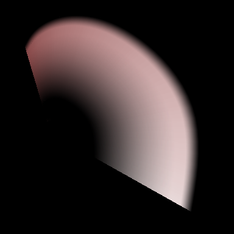

Render - Track¶
Overview¶
Here we explain the parameters that affect the drawing when "Track" is selected in the Render window.
When "Track" is selected, effects are drawn along a continuous track.
The track is drawn by connecting a thick line between all the children of a certain particle instead of drawing each particle individually. For example, if particles 1, 2, and 3 are the children of particle 0, a shape is generated with a track drawn between 1, 2, and 3. The track is shaped by "connecting the dots" between each particle. Unlike the ribbon, which is influenced by the rotation and enlargement of the particle, the track is not influenced by them and always faces the camera.

Parameters¶
The number of spline division (1.4 or later)¶
This parameter makes the shape smooth by dividing the track finely. It looks beautiful, although processing becomes heavier.
Division : 1 | Division : 8 |
 |  |
Front Size¶
Specify the width of the front of the track.
Middle Size¶
Specify the width of the middle of the track.
Back Size¶
Specify the width behind the track.
Color, Left¶
Specify the color of the left front and left rear of the track.
Color, Left-Center¶
Specify the color of the left middle of the track.
Color, Center¶
Specify the color in front of the middle of the track and the rear in the center.
Color, Center-Middle¶
Specify the middle middle color of the track.
Color, Right¶
Specify the color to the front right and back right of the track.
Color, Right-Center¶
Specify the color of the right middle of the track.